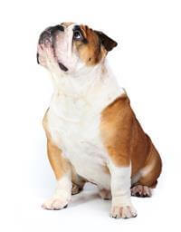
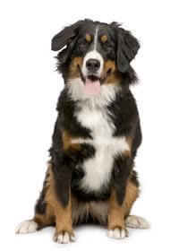
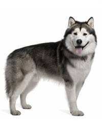
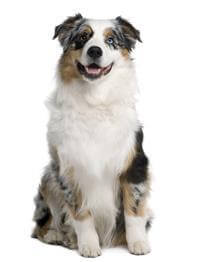
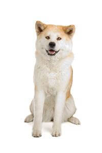
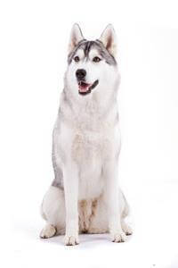

DỊCH VỤ CHO CÁC BÉ
Giống Chó Bull Anh
 Chó Bull Anh, còn được gọi là chó bò Anh, là một giống chó hiền lành nhưng lại rất dũng mãnh, lạnh lùng mà lại cũng rất nhạy cảm.
Cân nặng : 18 - 30 kg
Chiều cao : Trên 16 inch (40 cm)
Bộ lông : Ngắn và mịn
Tuổi thọ : 8 - 10 năm
Tìm hiểu thêm về Giống Chó Bull Anh...
Giống chó của Chó núi Bern
 Tổ tiên của những chú chó giống Bernese Mountain đã được đưa vào Thụy Sĩ từ hơn 2000 năm trước bởi các lực lượng quân đội La Mã xâm lược, và mặc dù ngày nay vẫn có thể tìm thấy chúng trong các trang trại ở miền trung Thụy Sĩ.
Cân nặng : 40-50 kg
Kích thước : Từ 60cm - 70cm
Bộ lông : Dài và mịn
Tuổi thọ : 12-14 năm
Tìm hiểu thêm về Giống chó của Chó núi Bern...
Giống Chó Alaskan Malamute
 Alaska Malamute là giống chó có nguồn gốc từ Bắc Cực nên chúng sẽ phù hợp với những nơi có điều kiện khí hậu cực lạnh.
Cân nặng : 34-38 kg
Chiều cao : 23-25 inch (58-64 cm)
Bộ lông : Bộ lông hai lớp, dày
Tuổi thọ : 10-14 năm
Tìm hiểu thêm về Giống Chó Alaskan Malamute...
Giống Chó chó chăn cừu Úc
 Nghe tên gọi thì bạn có thể nghĩ rằng giống chó này có nguồn gốc từ nước Úc.
Cân nặng : 18-30 kg
Chiều cao : 25-32 inch (64 - 81 cm)
Bộ lông : Bộ lông dài trung bình, thẳng hoặc lượn sóng
Tuổi thọ : 12-15 năm
Tìm hiểu thêm về Giống Chó chó chăn cừu Úc...
Giống Chó Akita
 Giống chó Akita được lai tạo từ thế kỷ 17 để làm chó săn. Nếu bạn có ý định nuôi một chú chó giống lớn để bảo vệ bạn và canh giữ nhà, thì giống chó Akita là lựa chọn phù hợp dành cho bạn.
Cân nặng : 31-59 kg
Chiều cao : 24-28 inch (61-71 cm)
Bộ lông : Bộ lông hai lớp
Tuổi thọ : 10-14 năm
Tìm hiểu thêm về Giống Chó Akita...
Giống Chó Siberian Husky
 Siberian Husky hay còn gọi là chó Husky Siberiani, hay chó Husky Siberian, là một trong những giống chó được “săn lùng” nhiều nhất.
Cân nặng : 5,5 - 7 kg
Chiều cao : 20-23 inch (51-58 cm)
Bộ lông : Bộ lông hai lớp - lớp lông bên ngoài thẳng và lớp lông tơ mềm mại
Tuổi thọ : 12-15 năm
Tìm hiểu thêm về Giống Chó Siberian Husky...
Giống chó chăn cừu Đức
 Giống chó chăn cừu Đức thông minh, trung thành và thích hoạt động tinh thần cũng như thể chất. Chúng có bản năng bảo vệ rất cao và sẵn lòng làm mọi điều để bảo vệ người thân khỏi nguy hiểm.
Giống chó chăn cừu Đức thông minh, trung thành và thích hoạt động tinh thần cũng như thể chất. Chúng có bản năng bảo vệ rất cao và sẵn lòng làm mọi điều để bảo vệ người thân khỏi nguy hiểm.
Cân nặng :22 đến 40 kg
Chiều cao : 22 đến 26 inches
Bộ lông : Lông hai lớp
Tuổi thọ : 7 đến 10 năm